🏠 Nakvynė
Sanders Saint-Nice 1-Bdr Apt by the Canals
Christianshavns Torv, 1411 København K, Danija
Jaukus butas Christianshavn rajone prie kanalų, vos 3 minutės pėsčiomis nuo Christianshavn metro stotelės (M1/M2) – puikus pasirinkimas keliaujant be automobilio. 1 minutė nuo Vor Frelsers Kirke bokšto, apie 15 minučių pėsčiomis iki Nyhavn ir senamiesčio. Bute yra virtuvėlė su indaplove ir orkaite, interneto prieiga ir centrinis šildymas.
🔎 Booking.com: 2026-10-23–2026-10-26, 4 žm.Apartamentų aprašymas
Butas yra Christianshavn rajone, Kopenhagos kanalų kvartale, žinomame dėl spalvingų namų ir ramios atmosferos vos per kelias minutes nuo senamiesčio.
Skelbiamas kaip vieno miegamojo (1-Bdr) butas – keliaujant keturiems, prieš galutinį patvirtinimą verta patikrinti tikslų miegamųjų vietų skaičių su šeimininku.
🍽 Netoliese pavalgyti
- Ravelinen – restoranas · 110 m · ~1 min pėsčiomis · 📍 Google Maps
- Havnens BBQ – kebabas, sumuštiniai · 190 m · ~3 min pėsčiomis · 📍 Google Maps
- Kafe Falken – pub · 240 m · ~3 min pėsčiomis · 📍 Google Maps
- Restaurant Lille Mølle – restoranas · 250 m · ~3 min pėsčiomis · 📍 Google Maps
- Amagerport Vinstue – greitas maistas · 270 m · ~4 min pėsčiomis · 📍 Google Maps
- Cafe Wilder – kavinė · 80 m (prie Ved Kanalen) · ~1 min pėsčiomis · 📍 Google Maps
- Les Amis – kavinė · 80 m · ~1 min pėsčiomis · 📍 Google Maps
- Sushi Saiko – suši · 90 m · ~1 min pėsčiomis · 📍 Google Maps
- Tinos Pizzeria – picerija · 100 m · ~1 min pėsčiomis · 📍 Google Maps
- Sankt Annæ 8 – regioninė virtuvė · 110 m · ~1 min pėsčiomis · 📍 Google Maps
🛒 Parduotuvės
- Netto – prekybos centras · 280 m · ~4 min pėsčiomis · 📍 Google Maps
- Wislapolska – krautuvė · 310 m · ~4 min pėsčiomis · 📍 Google Maps
- Den Polske Købmand – parduotuvė · 320 m · ~4 min pėsčiomis · 📍 Google Maps
- Købmandskælderen – parduotuvė · 70 m · ~1 min pėsčiomis · 📍 Google Maps
- Bladudsalg – kioskas · 90 m · ~1 min pėsčiomis · 📍 Google Maps
📅 Diena 1 (2026-10-23) · Atvykimas ir Christianshavn
🌦 Dulksna, 9,5–12,3°C, apie 78% tikimybė lietui, vėjas iki 22 km/h – pasiimkite lietaus striukę ir skėtį.
⚠️ Didelė lietaus tikimybė – žr. Planą B dienos pabaigoje.Atvykimo skrydis iš Kauno. Atsiėmę bagažą, metro stotelėje nusipirkite bilietus Rejsebillet programėlėje arba automate (fizinis Rejsekort pamažu nebenaudojamas).

Nuotrauka: kallerna, CC BY-SA 4.0 · šaltinis
Įsikurkite ir palikite bagažą – butas 3 min pėsčiomis nuo Christianshavn metro stotelės.
Garsieji išorės sukasi laiptai su vaizdu į Christianshavn. Bokštas kasdien 09:00–20:00 (gali uždaryti stiprų vėją/lietų – jei taip, apžiūrėkite tik bažnyčią). Bilietas į bokštą ~70 DKK. Dviračių takai (cykelsti) – niekada jais neikite pėsčiomis.

Nuotrauka: Moahim, CC BY-SA 4.0 · šaltinis
Jaukus kavinė tiesiai prie kanalo – geras smørrebrød ir vietinis alus. Rekomenduojama paragauti smørrebrød su krevetėmis ir kiaušiniu bei danų gruzdintų bandelyčių (æbleskiver). 📍 Google Maps
Spalvingas kanalo krantas su laivais – klasikinė Kopenhagos atvirutė. Nemokama.

Nuotrauka: Dietmar Rabich, CC BY-SA 4.0 · šaltinis
Karališkoji rezidencija – sargybos keitimas vyksta apie vidurdienį, bet kiemas gražus bet kuriuo metu. Muziejų aplankysime kitą rytą.

Nuotrauka: Jebulon, CC0 · šaltinis
Nedidelė, bet ikoniška skulptūra – trumpas vizitas užtenka. Popietė mažiau minios nei rytais, kai atvažiuoja turistų autobusai.

Nuotrauka: klndonnelly, CC BY 2.0 · šaltinis
Saulei nusileidus (~17:15) kanalas gražiausias apšviestas. Vakarienė tradiciniame danų restorane, vienas žinomiausių Nyhavn kanale – rekomenduojami danų kotletai (frikadelės) ir rūkytos lašišos smørrebrød, vakarienė ~35 €/asmeniui.
🌧 Planas B (jei blogas oras)
Jautru orui: Vor Frelsers Kirke bokšto lipimas lauke, dienos pasivaikščiojimas Nyhavne, Amalienborg kiemo apžiūra ir Mažosios jūrų nimfos vizitas – visi lauke ir nemalonūs per dulksną su vėju (~22 km/val.).
Kopenhaga be lietaus – muziejai ir bažnyčios vietoje lauko pasivaikščiojimų
09:40–10:00 Kopenhagos oro uostas (CPH) – 📍 Maps
10:16–10:45 Apartamentai Sanders Saint-Nice – 📍 Maps (🚇 Metro M2: Lufthavnen → Christianshavn, ~14 min)
10:55–11:30 Vor Frelsers Kirke (bažnyčios vidus) – bokšto laiptai gali būti uždaryti dėl vėjo/lietaus, apžiūrime įspūdingą vidų. 📍 Maps (🚶 pėsčiomis)
11:45–12:45 Dansk Arkitektur Center (BLOX) – architektūros ekspozicijos prie uosto, viduje. 📍 Maps (🚶 pėsčiomis)
13:00–14:00 Pietūs – Christianshavns Bådudlejning og Café (dengta terasa). 📍 Maps (🚶 pėsčiomis)
14:20–16:00 Designmuseum Danmark – Danijos dizaino kolekcija. 📍 Maps (🚶 pėsčiomis)
16:15–16:45 Marmorkirken (Frederikskirke) – marmurinė kupolinė bažnyčia, vidus nemokamas. 📍 Maps (🚶 pėsčiomis)
17:10–19:30 Vakarienė – Nyhavns Færgekro, stogas virš galvos. 📍 Maps (🚶 pėsčiomis)
19:50–20:00 Grįžimas į apartamentus – baigiame toje pačioje vietoje, kaip ir pagrindiniame plane. 📍 Maps (🚇 Metro M1/M2: Kongens Nytorv → Christianshavn, ~4 min)
💡 Patarimas: Designmuseum Danmark bilietus verta pirkti internetu iš anksto, kad nereikėtų laukti lietuje prie kasos.
📅 Diena 2 (2026-10-24) · Pilys ir muziejai
🌦 Lietus, 10,4–12,0°C, apie 72% tikimybė lietui, vėjas iki 28 km/h – diena dažniausiai vidinė (muziejai, pilys), patogu bet kokiu oru.
Karūnos brangenybės ir karališkoji istorija. Žiemos darbo laikas (spalis–kovas) 10:00–16:00. Bilietas ~140 DKK, nemokamai <18 m.

Nuotrauka: Jakub Hałun, CC BY-SA 4.0 · šaltinis
💡 Jei atvykstate anksčiau nei 10:00, gražiausia palaukti pasivaikščiojant po Kongens Have parką prie pat pilies.
Danijos nacionalinė dailės galerija. Šeštadienį dirba 10:00–18:00. Bilietas ~140 DKK, nemokamai <18 m.

Nuotrauka: Daderot, CC0 · šaltinis
Geriausia maisto turgavietė mieste – rekomenduojamas Hallernes Smørrebrød prekystalis tradiciniam smørrebrød, verta paragauti kiaušinio su krevetėmis bei traškaus kepsnio su spirgučiais. Įėjimas nemokamas, mokama už prekes, ~16 €/asmeniui.

Nuotrauka: Jorge Franganillo, CC BY 2.0 · šaltinis
Danijos parlamento būstinė, karališkosios reprezentacinės salės ir pilies griuvėsiai. Kasdien 10:00–17:00. Bilietas ~215 DKK internetu / 225 DKK vietoje, nemokamai <18 m.

Nuotrauka: Moahim, CC BY-SA 4.0 · šaltinis
Didžiausias Danijos muziejus, vikingų ir priešistorės kolekcijos. Dirba kasdien 10:00–17:00. Bilietas ~150 DKK – patikrinkite prie kasos, kai kurie šaltiniai teigia, kad nuolatinė ekspozicija nemokama.

Nuotrauka: Dietmar Rabich, CC BY-SA 4.0 · šaltinis
Aukštai vertinamas tradicinis danų restoranas tiesiai prie kanalo, netoli nakvynės vietos.
📅 Diena 3 (2026-10-25) · Christiania, Tivoli ir Deep Purple koncertas
🌦 Lietus, 8,5–12,8°C, apie 85% tikimybė lietui, vėjo gūsiai iki 59 km/h – labai vėjuota diena.
⚠️ Smarkus lietus ir stiprus vėjas – šiandien Planas B tikrai gali būti geresnis pasirinkimas.Šios nakties pradžioje (02:00→03:00) Danijoje baigiasi vasaros laikas – laikrodžiai pasukami 1 val. atgal. Patikrinkite, ar telefonas laiką pakeičia automatiškai.
Savivaldi alternatyvi bendruomenė, gatvės menas. Lankykite tik dienos metu. Pusher Street – nefotografuokite, laikykitės taisyklių. Nemokama.

Nuotrauka: Neptuul, CC BY-SA 4.0 · šaltinis
Antikos ir impresionistų kolekcija, žiemos sodas po stiklo kupolu. Sekmadienį dirba 10:00–17:00. Bilietas ~125 DKK.

Nuotrauka: Richard Mortel, CC BY 2.0 · šaltinis
15 atrinktų prekystalių Tivoli sodų viduje – patogu tarp apsilankymų, rekomenduojamas smørrebrød (Hallernes prekystalis) arba mėsainis, pietūs ~20 €/asmeniui.
Istorinis pramogų parkas, per visą kelionę vyksta Helovino sezonas su 20 000 moliūgų dekoracijų. Vartai 11:00–23:00. Bilietas ~200 DKK suaugusiam.

Nuotrauka: Jakub Hałun, CC BY-SA 4.0 · šaltinis
💡 Šis traukinys kursuoja tik kas 20 min – iš Tivoli verta išeiti kelias minutes anksčiau arba pasitikrinti tikslų išvykimo laiką.
Didelis prekybos centras su maisto kiemeliu prie pat arenos – patogu prieš koncertą, rekomenduojamas graikiškas kebabas/gyros arba picos gabalas, vakarienė ~18 €/asmeniui.
17:50–22:00Royal Arena – Deep Purple koncertas
Durys atsidaro ~18:00, koncerto pradžia orientaciniai ~19:00–20:00 (patikslinti artimiau datai livenation.dk). Dėl vasaros laiko pabaigos šią naktį patikrinkite vėlyvo metro tvarkaraštį grįžtant.

Nuotrauka: Jenny Andersson / News Oresund, CC BY 2.0 · šaltinis
Po koncerto grįžtama tiesioginiu metro. Patikrinkite paskutinio traukinio laiką.
🌧 Planas B (jei blogas oras)
Jautru orui: Freetown Christiania pasivaikščiojimas ir Tivoli sodų lankymas (14:00–16:00) – abu lauke, o spalio 25 d. numatomas smarkus lietus (~10 mm) ir vėjo gūsiai iki 59 km/h, kai atrakcionai ir lauko takai gali būti uždaryti ar nesaugūs.
Lietinga diena viduje – muziejai, planetariumas ir Deep Purple koncertas
09:20–09:50 Freetown Christiania (trumpas vizitas tik pagrindine gatve). 📍 Maps (🚶 pėsčiomis)
10:10–11:30 Thorvaldsens Museum – skulptoriaus Bertel Thorvaldsen kūriniai, viduje. 📍 Maps (🚶 pėsčiomis)
11:40–12:55 Ny Carlsberg Glyptotek. 📍 Maps (🚶 pėsčiomis)
13:00–14:00 Pietūs – Café Glyptotek, stiklo kupolo žiemos sode tarp palmių. 📍 Maps (🚶 pėsčiomis)
14:15–15:45 Tycho Brahe Planetarium – IMAX kupolo filmai ir astronomija. 📍 Maps (🚶 pėsčiomis)
16:25–17:45 Vakarienė – Field's. 📍 Maps (pėsčiomis iki København H ~15 min, toliau S-tog: København H → Ørestad ~7 min)
17:50–22:00 Royal Arena – Deep Purple koncertas (durys ~18:00). 📍 Maps (🚶 pėsčiomis)
22:20–22:30 Grįžimas į apartamentus – baigiame toje pačioje vietoje, kaip ir pagrindiniame plane. 📍 Maps (🚇 Metro M1: Ørestad → Christianshavn, ~20 min)
💡 Patarimas: Royal Arena koncertas ir kelionė iki jo nesikeičia – tai vidaus renginys, nepriklausantis nuo oro; į Ørestad patogiausia važiuoti S-tog traukiniu nuo København H.
📅 Diena 4 (2026-10-26) · Amalienborg, Nyhavn ir skrydis namo
🌦 Debesuota (Kaune), 8,4–12,3°C, apie 31% tikimybė lietui, vėjas iki 25 km/h.
Karališkųjų apartamentų interjerai. Prieš lapkričio 1 d. pirmadieniais dirba 10:00–15:00. Bilietas ~125 DKK internetu / 135 DKK vietoje, nemokamai <18 m.
Trumpas laikas suvenyrams ir paskutinėms nuotraukoms prie kanalo.
Atsiimkite bagažą ir išsiregistruokite.
Grįžtamasis skrydis CPH→KUN išvyksta 15:15. Pietus patogu užkąsti pačiame oro uoste – daug kavinių ir restoranų abipus saugumo patikros (pvz. Aamanns Deli, rekomenduojama rūkytos lašišos smørrebrød arba kiaušinis su krevetėmis). Rekomenduojama iš anksto atlikti registraciją internetu, liks pakankamai laiko bagažo pridavimui ir saugumo patikrai.

Nuotrauka: Ank Kumar, CC BY-SA 4.0 · šaltinis
🗺️ Žemėlapis
🌦 Orų prognozė
| Diena | Vieta | Oras | Temperatūra | Lietaus tikimybė | Vėjas |
|---|---|---|---|---|---|
| 23-10 (1) | Kopenhaga | Dulksna | 9,5–12,3°C | 78% | iki 22 km/h |
| 24-10 (2) | Kopenhaga | Lietus | 10,4–12,0°C | 72% | iki 28 km/h |
| 25-10 (3) | Kopenhaga | Lietus | 8,5–12,8°C | 85% | gūsiai iki 59 km/h |
| 26-10 (4) | Kaunas | Debesuota | 8,4–12,3°C | 31% | iki 25 km/h |
Prognozė atnaujinta 2026-10-21, artimiausioms dienoms – labai tiksli. Spalio 25-ąją verta sekti orų žinias dėl stiprių vėjo gūsių.
💰 Biudžetas
Įvertis 4 keliautojams, visai kelionei (2026-10-23–26):
| Kategorija | Tikėtina suma | Pastabos |
|---|---|---|
| ✈️ Skrydžiai KUN↔CPH (4 asm.) | 580 € | Ryanair, apie 123,5 €/asm., be registruoto bagažo |
| 🚇 Viešasis transportas | 150 € | City Pass 96 val. (zonos 1–4, įsk. oro uostą), ~37,5 €/asm. |
| 🏠 Nakvynė (3 naktys) | 420 € | Sanders Saint-Nice apartamentai, butas visai grupei |
| 🍽️ Maistas (4 asm. × 4 d.) | 716 € | Pusryčiai, pietūs, vakarienės pagal maršrutą |
| 🎫 Įėjimo bilietai | 629 € | Rosenborg, SMK, Christiansborg, Nationalmuseet, Tivoli, Glyptotek, Amalienborg, Vor Frelsers Kirke bokštas |
| Iš viso | ~2 495 € | ~624 €/asmeniui · intervalas 2 202–2 805 € |
Didžiausia neapibrėžtumo rizika – bagažo kaina (Ryanair neįskaičiuoja registruoto krepšio) ir Nationalmuseet įėjimo kaina (galbūt nuolatinė ekspozicija nemokama).
ℹ️ Praktinė informacija
- 🪪 Dokumentai: galiojantis pasas arba asmens tapatybės kortelė – Danija yra Šengeno zonoje, viza ES piliečiams nereikalinga.
- 💳 Valiuta: Danijos krona (DKK), ne euras – kortelės priimamos praktiškai visur, bet grynųjų verta turėti Christianijoje (bankomatų trūksta) ir smulkiems pirkiniams.
- 🙏 Arbatpinigiai: neprivalomi – paslauga įskaičiuota į sąskaitą. Galima apvalinti arba ~10% už ypač gerą aptarnavimą.
- 🩺 Sveikata: pasiimkite Europos sveikatos draudimo kortelę (EHIC) – nemokamas ar sumažintos kainos gydymas ES piliečiams.
- 🚨 Pagalbos numeris: 112 (policija/gaisrinė/greitoji, nemokamas). Nekritiniais medicininiais klausimais: 1813 (konsultacijos ir angliškai).
- 🎫 Viešojo transporto bilietai: Rejsebillet programėlė (keičia senąją DOT Billetter programėlę) arba City Pass – patogiausia pirkti telefone. Visoms viešojo transporto atkarpoms patogiausia pirkti bilietus Rejsebillet programėlėje telefone – ji galioja metro, traukiniams ir autobusams pagal zonas.
- 🚲 Dviračių takai: niekada nevaikščiokite pažymėtu dviračių taku (cykelsti) – vietiniai dviratininkai važiuoja greitai ir rimtai priima taisyklių pažeidimus.
- 😊 Papročiai: danai vertina punktualumą ir asmeninę erdvę, kultūra santūri ir neperdėta ("hygge").
- 🛡️ Saugumas: Kopenhaga bendrai labai saugi, tačiau saugokite daiktus turistų pamėgtose vietose (Nyhavn, Strøget). Christianijoje saugu dienos metu, vakare nevertėtų likti, laikykitės bendruomenės taisyklių (nefotografuoti Pusher Street).
- 🏠 Apartamentai ir metro: apartamentai Christianshavn rajone yra per kelias minutes pėsčiomis nuo Christianshavn metro stotelės – iš jos tiesioginiu M2 pasiekiamas oro uostas, o M1/M2 – Kongens Nytorv senamiesčio link.
- 🚆 Tivoli → Field's/Royal Arena: keliaujant iš Tivoli sodų į Field's/Royal Areną, naudojamas ne S-tog, o regioninis/Öresund traukinys – jis kursuoja tik kas 20 min, todėl geriau iš Tivoli išeiti kelias minutes anksčiau arba pasitikrinti tikslų išvykimo laiką.
- 🏰 Rosenborg prieš atidarymą: jei į Rosenborg pilį atvykstate anksčiau nei ji atidaroma (10:00 žiemą), gražiausia palaukti pasivaikščiojant po Kongens Have parką prie pat pilies.
- 🕐 Laiko pakeitimas: naktį tarp šeštadienio ir sekmadienio (spalio 24–25 d.) Danijoje baigiasi vasaros laikas – laikrodžiai pasukami 1 val. atgal, patikrinkite, ar telefonas laiką pakeičia automatiškai.
🎒 Ką pasiimti
- Skysčių taisyklė rankiniame bagaže: tik iki 100 ml talpyklos viename 1 l maišelyje – didesnes talpyklas palikti namuose arba pirkti po saugumo patikros.
- Peilių ir daugiafunkcių įrankių į rankinį bagažą imti negalima.
- 3-ią kelionės dieną prognozuojamas stiprus vėjas (iki 59 km/h) – skėtis bus nenaudingas, svarbiausia vėjui atspari striukė.
- Naktį iš spalio 25 į 26 d. Danijoje baigiasi vasaros laikas (laikrodžiai -1 val.) – patikrinti paskutinio metro traukinio laiką grįžtant iš koncerto.
- Danijoje beveik visur priimamos kortelės – grynųjų DKK reikia minimaliai.
Dokumentai ir pinigai
Drabužiai orui
Avalynė
Elektronika
Higiena ir kelionės reikmenys
Koncertui (Deep Purple, Royal Arena)
🍽 Kur pavalgyti
Diena 1
Christianshavns Bådudlejning og Café
Netoli: Vor Frelsers Kirke / pietų stotelė maršrute · kanalo kavinė valtų nuomoje · ~18 €/asmeniui
Jaukus 1905 m. veikiantis kanalo pakrantės kiosko tipo kavinė su valtų nuoma – vietinių mėgstama vieta paprastam, autentiškam smørrebrød.
Ką paragauti čia

Flickr user: cyclone bill, CC BY-SA 2.0
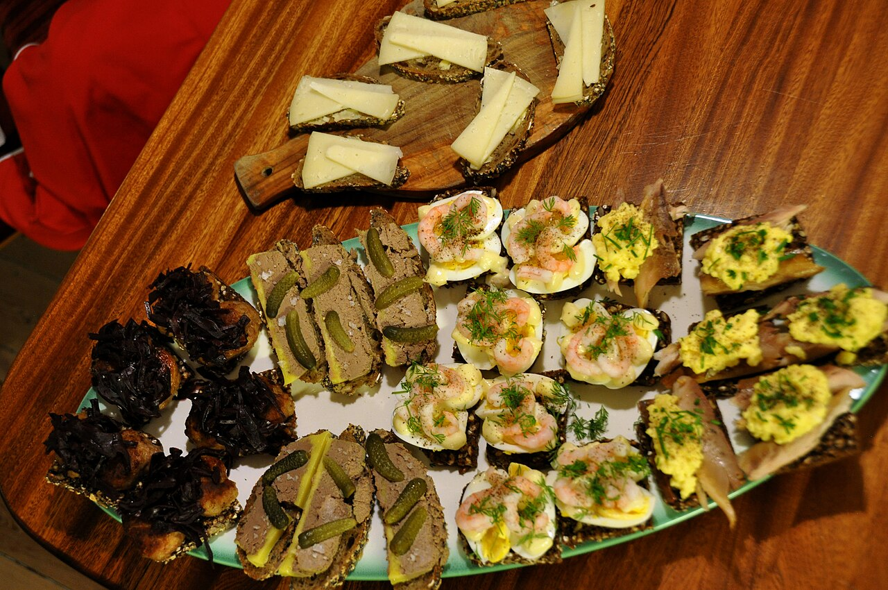
cyclonebill, CC BY-SA 2.0

JoachimK, Public domain
Nyhavns Færgekro
Netoli: Nyhavn vakare / vakarienė maršrute · tradicinis danų restoranas · ~28 €/asmeniui · Vakarienė ~35 € asmeniui
Vienas žinomiausių tradicinių restoranų Nyhavn kanale – silkių bufetas ir frikadelės sulaukia geriausių atsiliepimų.
Ką paragauti čia
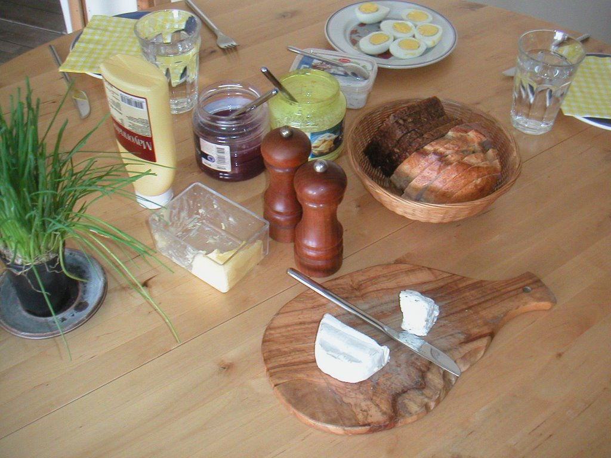
cyclonebill, CC BY-SA 2.0
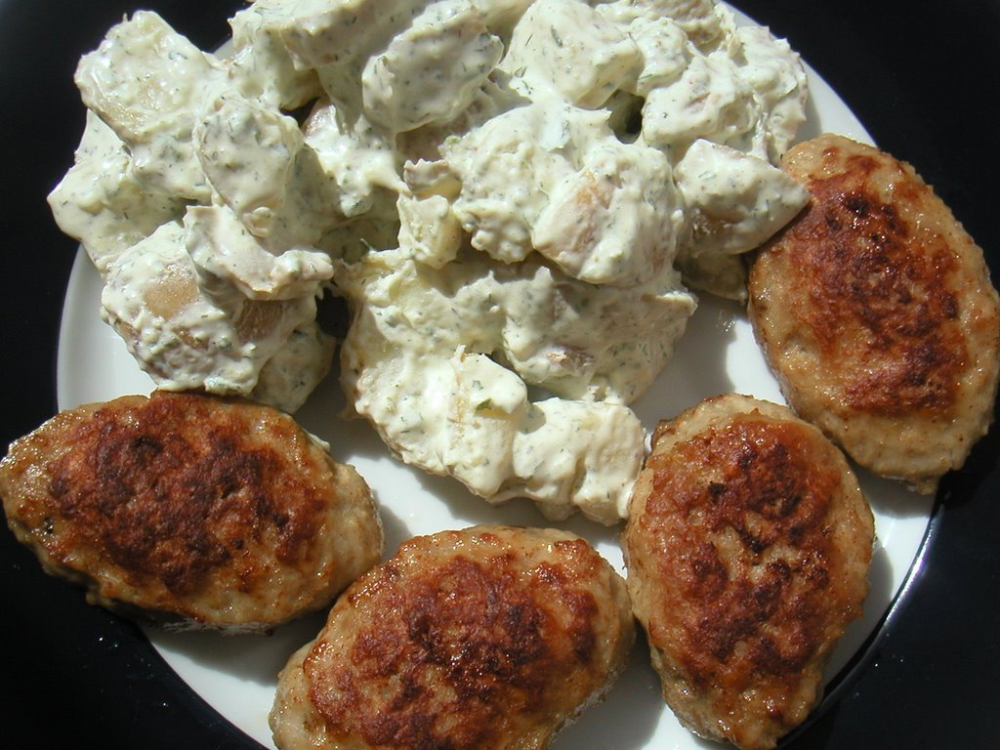
cyclonebill, CC BY-SA 2.0
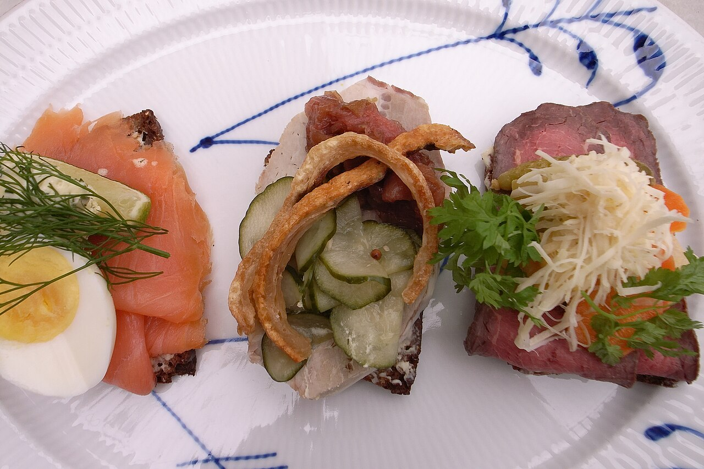
angermann, CC BY-SA 2.0
Diena 2
Hallernes Smørrebrød (Torvehallerne)
Netoli: Rosenborg Slot / SMK, pietų stotelė maršrute · smørrebrød prekystalis turguje · ~16 €/asmeniui
Geriausias smørrebrød prekystalis Torvehallerne turguje – šviežios, kokybiškos lokaliai gaminamos sumuštinės, be rezervacijos, valgoma prie bendro stalo.
Ką paragauti čia
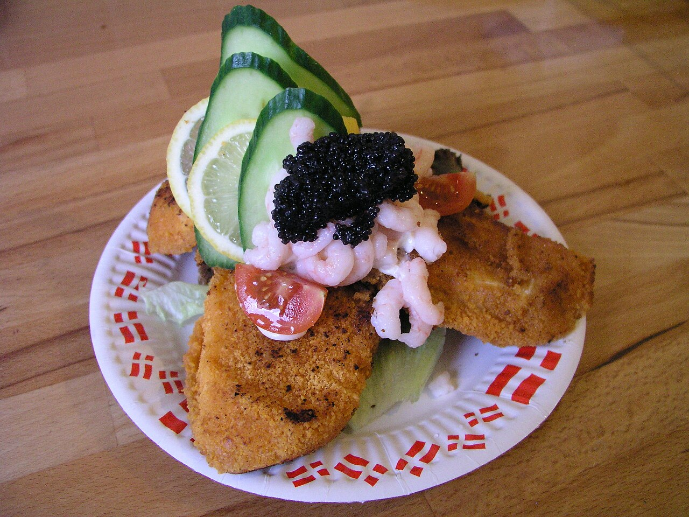
Nillerdk, CC BY 3.0
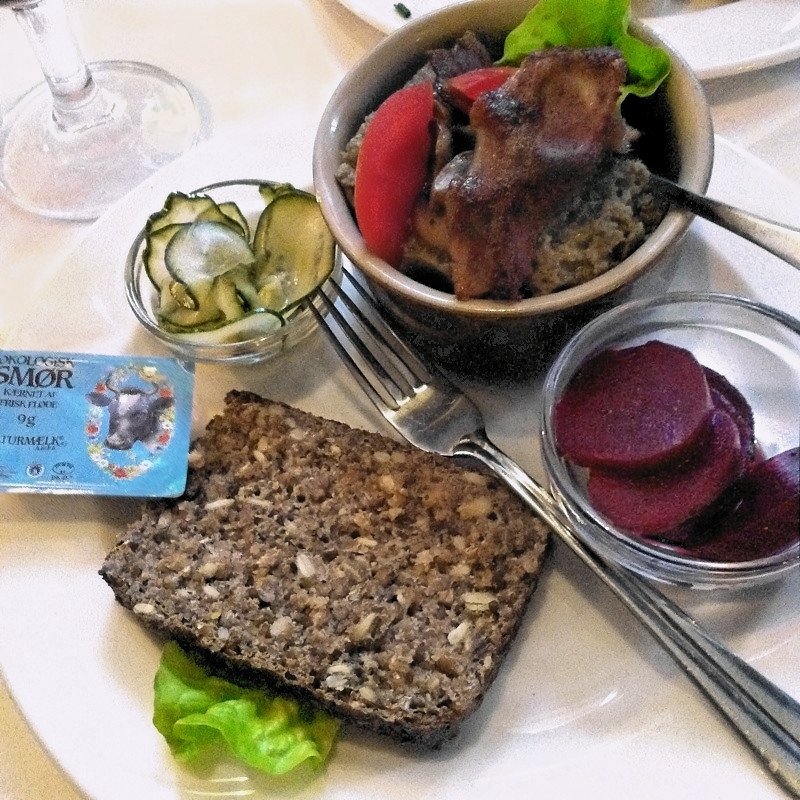
@boetter / Hic et nunc, CC BY 2.0
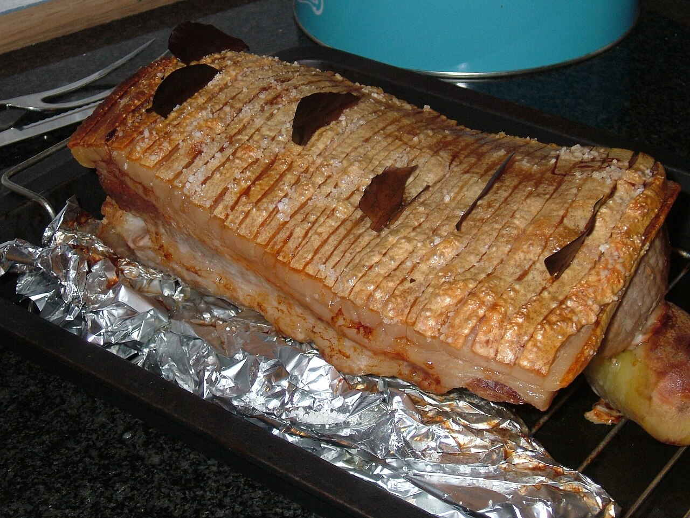
fru_green, CC BY-SA 2.0
Christianshavns Færgecafé
Netoli: nakvynė Christianshavn · šeimos kavinė-krūgelis · ~22 €/asmeniui · Vakarienė ~28 € asmeniui
Vietinių mėgstama, neturistinė krūgelio tipo kavinė prie kanalo – geresnis kainos ir autentiškumo santykis nei prie turistinio Ved Kanalen, vos keli žingsniai nuo apartamentų.
Ką paragauti čia
@boetter / Hic et nunc, CC BY 2.0
cyclonebill, CC BY-SA 2.0
cyclone bill, CC BY-SA 2.0
Diena 3
Morgenstedet
Netoli: Freetown Christiania · vegetariška savanorių valdoma užeiga · ~12 €/asmeniui
Legendinė, aukščiausiai vertinama vegetariška/vegano virtuvė visoje Christianijoje – kasdien kintantis meniu, tik grynieji.
Ką paragauti čia: Dagens suppe (dienos sriuba su duona, 7 €), Dagens ret (vegetariškas pagrindinis patiekalas, 11 €), Salat (salotos iš sezoninių daržovių, 6 €)
Tivoli Food Hall
Netoli: Tivoli Gardens, pietų stotelė maršrute · maisto salė · ~20 €/asmeniui
15 atrinktų prekystalių Tivoli sodų viduje – patogu tarp apsilankymų, įskaičiuota į bendrą dienos maršrutą.
Ką paragauti čia

Kritzolina, CC BY-SA 4.0
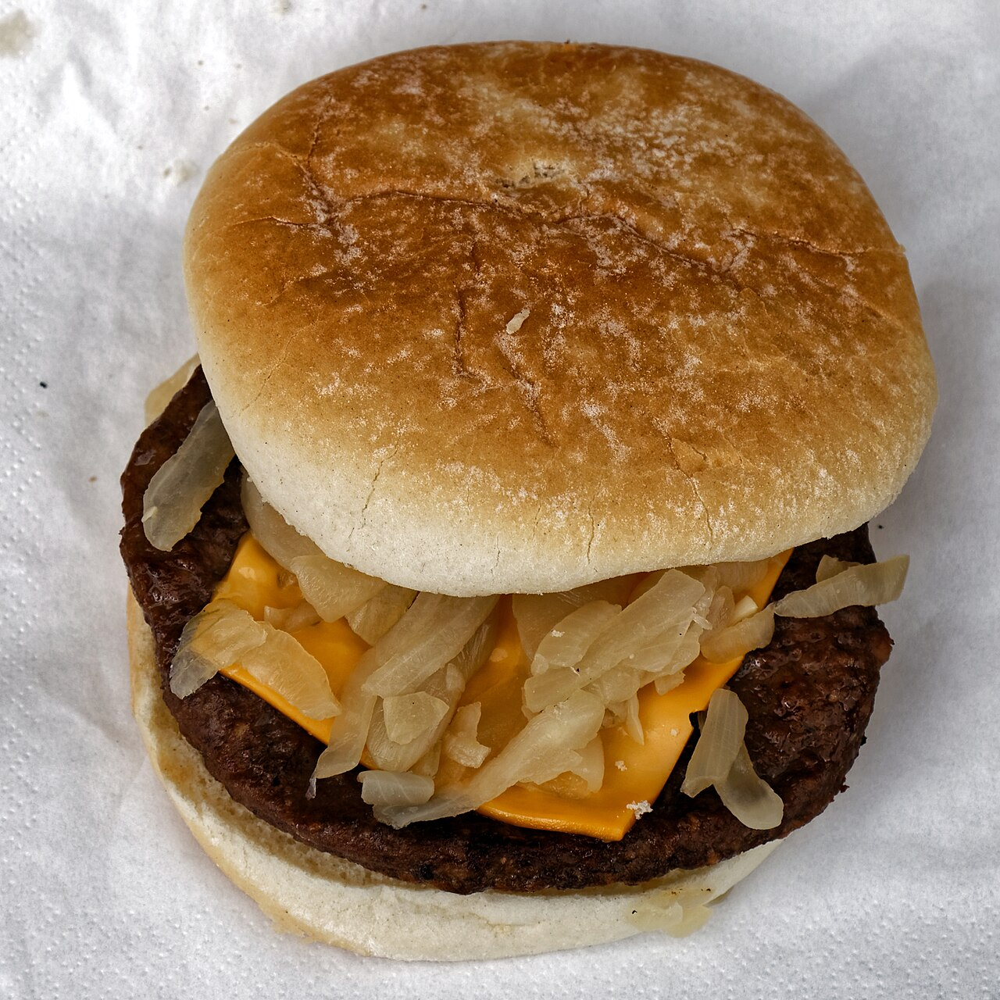
Acabashi, CC BY-SA 4.0
Mario56, CC BY-SA 3.0
Field's Food Court
Netoli: Royal Arena / Deep Purple koncertas · prekybos centro maisto kiemelis · ~15 €/asmeniui · Vakarienė ~18 € asmeniui
Ne vietinė virtuvė, bet praktiškiausia greita vakarienė prieš koncertą – greta Ørestad metro/S-tog stotelės, 5 min iki Royal Arena.
Ką paragauti čia
Mario56, CC BY-SA 3.0
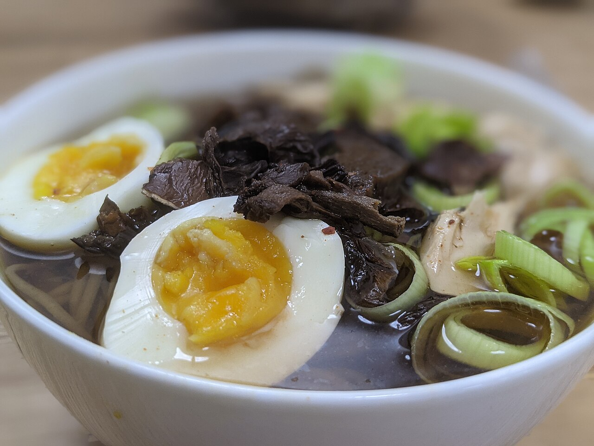
Shisma, CC BY 4.0
Graikiškas kebabas/gyros (Cyprus Restaurant), 13 € (nuotraukos nėra)
Diena 4
Aamanns Deli & Take Away (CPH oro uostas)
Netoli: Kopenhagos oro uostas (CPH), pietūs prieš skrydį · smørrebrød baras · ~16 €/asmeniui
Kokybiškas tradicinis smørrebrød jau peržengus saugumo patikrą – retas atvejis, kai oro uoste galima paragauti autentiško danų maisto, ne tik fast-food.
Ką paragauti čia
angermann, CC BY-SA 2.0
cyclonebill, CC BY-SA 2.0
Nillerdk, CC BY 3.0
🍸 Barai
- Kayak Bar (Diena 1) – Børskaj 12, prie Knippelsbro tilto. Baras tiesiog ant kanalo kranto su baidarių nuoma. 📍 Google Maps
- Hviids Vinstue (Diena 2) – Kongens Nytorv 19. Seniausias vyno baras Kopenhagoje, veikiantis nuo 1723 m. 📍 Google Maps
🥘 Ką paragauti
Danijos vizitinė kortelė – plonas ruginės duonos griežinėlis su gausiu įdaru (silke, krevetėmis, kepenų pašteto, mėsos), valgomas peiliu ir šakute.
8–17 €
Kur: Torvehallerne, Christianshavns Bådudlejning, Christianshavns Færgecafé, Aamanns Deli
Kritzolina, CC BY-SA 4.0
Kiaulienos ir jautienos faršo kotletai su virtomis bulvėmis, rudu padažu ir raudonaisiais kopūstais, arba ant smørrebrød.
13–26 €
Kur: Nyhavns Færgekro, Christianshavns Færgecafé, Aamanns Deli
cyclonebill, CC BY-SA 2.0
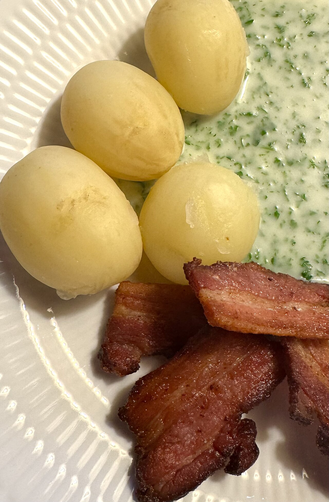
2014 m. visuomenės balsavimu išrinktas Danijos nacionaliniu patiekalu – traškiai keptas kiaulienos šoninis su bulvėmis ir petražolių padažu.
17–24 €
Kur: Hallernes Smørrebrød (Torvehallerne)
XYZA-2400, CC0
Marinuota silkė keliais padažais (garstyčių, kario, pomidorų) ant ruginės duonos – klasikinis smørrebrød pradžios patiekalas.
9–25 €
Kur: Nyhavns Færgekro, Christianshavns Bådudlejning, Christianshavns Færgecafé
cyclone bill, CC BY-SA 2.0
Apvalios, iš blynų tešlos keptos spurgytės su obuolių gabalėliais, barstomos cukraus pudra, patiekiamos su uogiene – populiarios rudenį.
6–9 €
Kur: Christianshavns Bådudlejning og Café
JoachimK, Public domain
Kepta kiaulienos mentė ar nugarinė su traškiu, gruzdintu kailiuku – tradicinis šventinis patiekalas, dažnas ir smørrebrød variantas.
12–20 €
Kur: Hallernes Smørrebrød (Torvehallerne)
fru_green, CC BY-SA 2.0
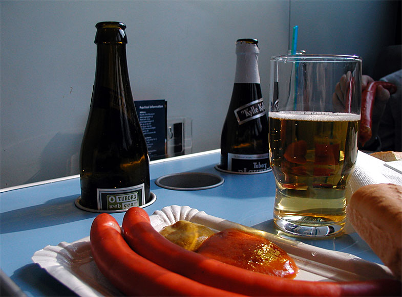
Ryškiai raudona virta dešrelė iš dešrelių vežimėlio gatvėje, su garstyčiomis, kečupu, svogūnais ir agurkėliais – greitas, pigus danų gatvės maisto klasikas.
4–7 €
Kur: gatvės dešrelių vežimėliai visame mieste
Daniel Mott, CC BY-SA 2.0
📋 Praktinė info kelionei
- ✈️ Skrydis KUN → CPH: 09:10–09:40 (2026-10-23)
- ✈️ Skrydis CPH → KUN: 15:15–17:45 (2026-10-26)
- 🕐 Butas – atsiskaitymas: ___ : ___ · atsiregistravimas: 12:00
- 📞 Kelionės koordinatorius: _____________
- 🏥 Draudimo kortelės/EHIC numeris: _____________